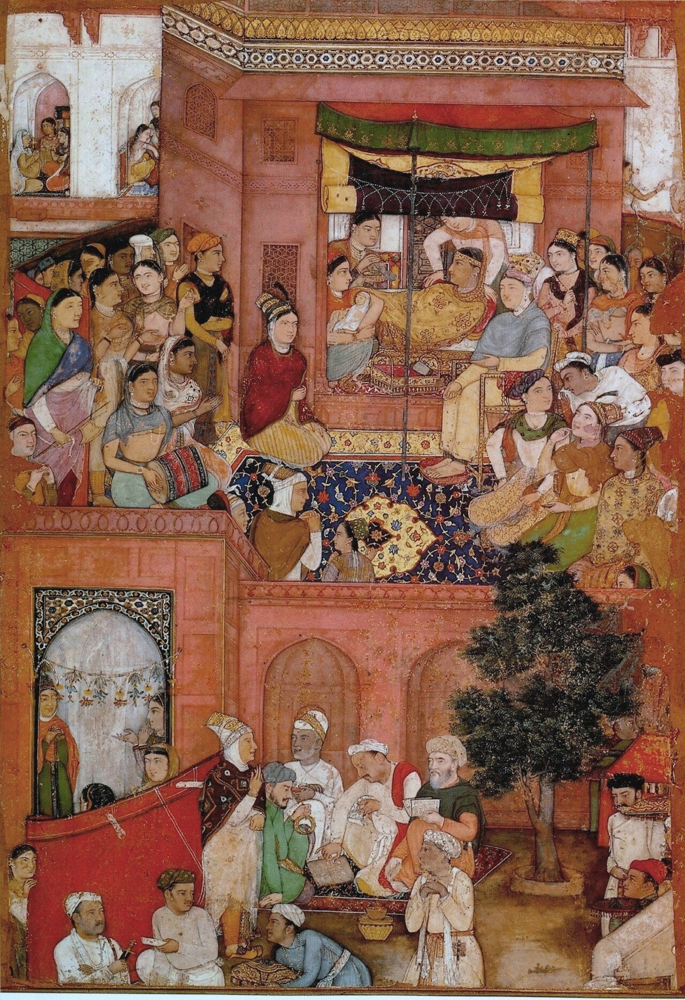
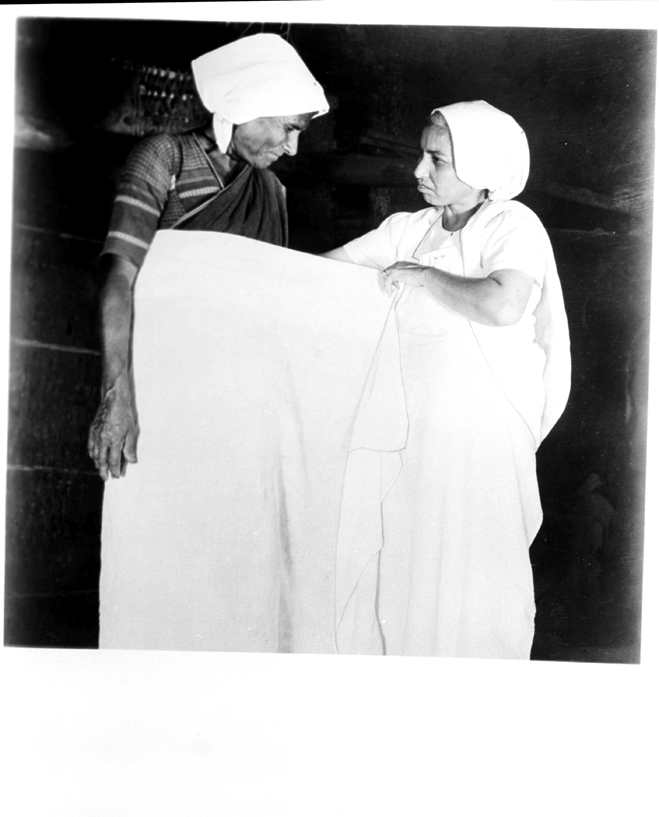
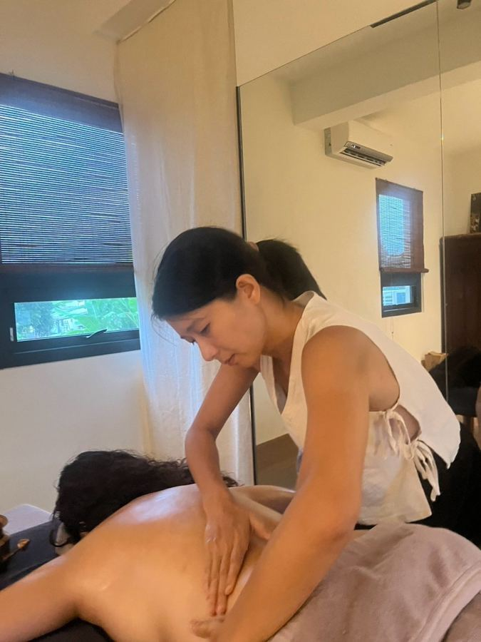

- 每天被抹油的四十天
- 她不是保姆：Dai 的故事（本篇）
- Jaapa 的廚房，和我想誠實說的事
上一篇寫到，印度的媽媽產後四十天，每天都有一雙手為她抹油、按摩、綁腹。
這一篇，我想寫那雙手的主人。
不只是保姆
在印度傳統的產後照顧裡，有一個不可或缺的角色，叫 Dai（印度傳統產婆）。
她們不只是「保姆」。一位稱職的 Dai，同時是接生的產婆、按摩的身體工作者、懂香料藥性的廚房顧問，也是新手媽媽身邊那個「沒事，我看過很多」的人。
她們的知識不是從書本來的，而是一代傳一代——跟著媽媽、阿嬤，在一次又一次的生產現場裡學會。

在 Jaapa 的四十天裡，Dai 或她的後繼者通常包辦這些事：
- Malish（按摩）：每天為媽媽做全身油壓，也為寶寶做溫和的按摩
- 綁腹：按摩後，用好幾公尺長的棉布把媽媽的腹部與骨盆綁穩
- 產後膳食：調配胡蘆巴茶、熬煮加了堅果與酥油的滋補粉 Panjeeri（下一篇細談）
- 沐浴：用楝樹葉或藥草煮水，準備溫熱的洗澡水
名字的變化
到了現代的城市裡，協助產後 40 天調養的人，更常被叫做 Japa Maid（賈帕幫手），或 Malishwali（專門按摩的婦女）。
她們身上，依然帶著傳統 Dai 的手藝。只是現在多半透過仲介公司聘請，像月嫂一樣住進家裡。
有一篇印度媒體的評論寫得很有意思：印度擁有最古老的產後照顧傳統之一，但把它做成一門產業的，卻是中國的月子中心。在印度，產後照顧中心甚至沒有專屬的執照類別，法律上被歸類為民宿。[1]
讓我心疼的那一段
查資料的時候，有一段歷史讓我停了很久。
在傳統的印度村落，Dai 大多來自種姓制度裡被歸為「低種姓」或「賤民」（Dalit，達利特）的社群。[2][3] 原因是：在傳統觀念裡，生產時的血、羊水、胎盤，被看成「不潔」的東西，處理這些的工作，就落在被社會排在最底層的女人身上。
想想看這個畫面：
她用自己的雙手，把一個生命接到這個世界上；她每天替產婦抹油、洗身、綁腹，照顧得無微不至。
可是在很多家庭裡，她做完了，卻不一定能跟主人家坐在同一張桌子吃飯。
殖民時期，有些上層階級的論述，還把她們形容成「骯髒」「沒受過訓練」。[4] 後來政府為了降低母嬰死亡率，用現金補助鼓勵媽媽到醫院生產，這確實救了很多人；但 Dai 也因此越來越少被請去，那些代代相傳的手藝，跟著一點一點消失。[2]

我心疼的，是那位被叫去接生、卻被當成「不潔」的女人。
也有人替她們說話
學者之間，對 Dai 的看法其實有爭論。
有人把她們看成只是「處理污穢」的勞動者；但人類學家 Sarah Pinto 提醒我們：如果只用「污穢禁忌」來理解她們的勞動，就看不見這份工作在身體上、象徵上、社會上的真正價值。[3]
在印度比哈爾邦，也有一個計畫把鄉村產婆們的聲音記錄下來，她們自己說：「這就是我們種姓在做的事。」語氣裡有無奈，也有驕傲。[5]
我很喜歡 Pinto 的這個提醒。因為身為陪產員，我太知道「陪伴」常常被看成「沒什麼技術」的事——好像只是在旁邊而已。
可是在旁邊，本身就是一門手藝。
一位找不到 Dai 的媽媽
教我阿育吠陀產後修復的 Sonia 老師，跟我們說過她開這門課的原因。
她自己生完孩子之後，非常想好好體驗一次阿育吠陀式的、完整的產後修復。可是那時候在台灣，她怎麼找，都找不到一個可以提供這種照顧的人。
找不到，那就自己來培育。
於是她萌生了一個念頭：在台灣培育一群能做印度阿育吠陀式產後修復的人——某種程度上，就是一群「Dai」。
我就是其中一個。
讀完 Dai 的歷史，再想到老師的這個念頭，我心裡有一種很奇妙的感覺：那些在印度村落裡一點一點消失的手藝，正透過一位找不到 Dai 的媽媽，在另一座島上重新長出來。
我在這條路上的位置
寫這篇的時候，我一直在想自己。
我是陪產員，也在學阿育吠陀的產後修復。某種程度上，我做的事，跟千百年來的 Dai 很像：陪著女人生，陪著女人修復，用手，用溫度，用在場。
不同的是，我是被選擇的。媽媽們選擇我、信任我、謝謝我。

這份被尊重，不是理所當然的。它是很多不被看見的女人，用一輩子的勞動換來的。
所以每一次把手放到一位媽媽身上，我都想帶著一點敬意——對眼前的她，也對那些名字沒有被記下來的 Dai 們。🌿
下一篇，我們走進 Jaapa 的廚房：胡蘆巴、酥油、Panjeeri，還有我想誠實說的一些事。 →
- 每天被抹油的四十天
- 她不是保姆：Dai 的故事（本篇）
- Jaapa 的廚房，和我想誠實說的事
資料來源
- Swarajya〈Jaapa: India Has One Of The Oldest Postpartum Traditions, But It Is China That Has Built An Industry〉：連結（綜合・媒體）
- Dai 與種姓、機構分娩政策的影響：Kannur University Journal（學術）
- Sarah Pinto〈More than a dai〉，Seminar 2006：連結（學術・人類學）
- Dhaara Magazine，殖民時期對產婆的污名：連結（綜合）
- IDR〈This is what our caste does: Reflections from midwives in rural Bihar〉：連結（實戰・一手紀錄）
圖片來源
- 《The Birth of Prince》，Bishandas，ca. 1610–15，Page from Jahangirnama，Museum of Fine Arts, Boston，公有領域，via Wikimedia Commons
- 〈An Indian village midwife being trained to cover her hair and wear a clean sari and apron〉，Photo Division, Ministry of Information & Broadcasting, Government of India／United Nations，1949，公有領域，via Wikimedia Commons
- 其餘照片：Birth with Milliya 服務現場
本文為資訊整理，不構成醫療建議，也不能取代妳與醫師、助產師、兒科醫師的直接討論。